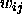
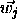

This function generates random points in an n-dimensional hypercube and later projects them onto the surface of an n-dimensional unit hypersphere or onto one of its main diagonal sectors (main diagonal quadrant for n=2, octant for n=3, ...).
First the interval, from which the Kohonen weights for the
initialization tasks are selected, is determined. Depending upon the
initialization parameters, which have to be provided in field1
and field2, the interval may be  ,
,  , or
, or
 .
.
Every component

of every Kohonen layer neuron j is then assigned a random value from the above interval, yielding weight vectors , which are random points within an
n-dimensional hypercube.
, which are random points within an
n-dimensional hypercube.
The length of each vector

is then normalized to 1.All weights of the neurons of the Grossberg layer are set to 1.
Note that this initialization function does NOT produce weight vectors with equal point density on the hypersphere, because with increasing dimension of the hypercube in which the random dots are generated, many more points are originally in the corners of the hypercube than in the interior of the inscribed hypersphere.